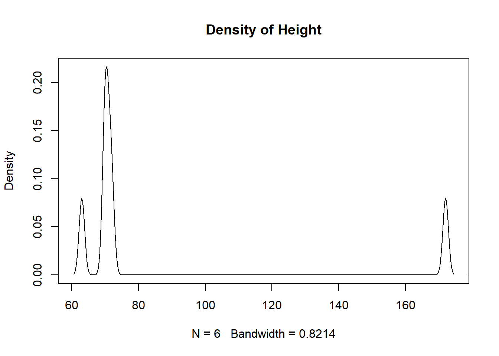
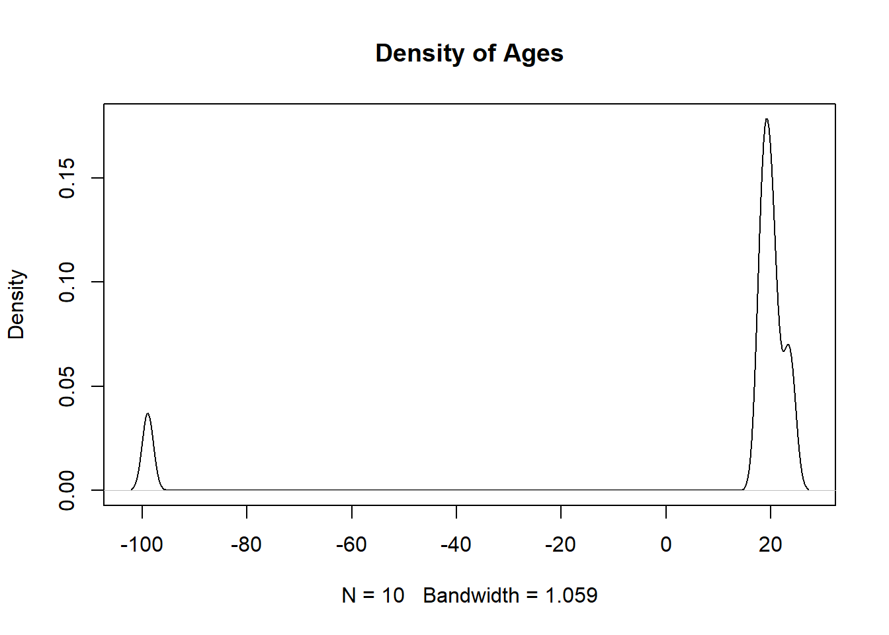

More often than not, the data that we encounter in the “real world” will be messy and incomplete. Besides just noting that NA (missing) values exist in the dataset, we will need to decide what should be done to deal with them and what impact they may have on our analysis. This is because missing values can bias our results, but so can not recognizing a value as missing. We should stress that just because a value is missing does not mean that it is unimportant. In this write-up, we will delve into how we can deal with missing values in our dataset. Essentially, we will want to know what values are missing, why they are missing, and then work to ensure that they are properly encoded in our dataset so that they do not bias the results of our analysis.
Identify missing and suspicious values using is.na(), complete.cases(), summary(), table(), and simple plots to flag potential data quality issues.
Distinguish between truly missing values and miscoded/implied missing values, and recode them properly as NA.
Evaluate the impact of missing data on analysis by computing counts/proportions of missingness by row and by column, and deciding when dropping rows/columns is reasonable.
Apply basic imputation strategies when appropriate and clearly document the assumptions being made.
Export and re-import cleaned data with write.csv() and read.csv(), controlling for row.names, header issues, and column data types.
Throughout this write-up, we will use the following dataset that describes 10 different college students and the time it takes them to complete a given assessment. As we can notice, there are quite a few missing values in the dataset.
names ages ages_in_months weight height time
1 A 19 228 150 NA 5:32
2 B 20 240 NA NA <NA>
3 C 23 276 170 70 <NA>
4 D 21 252 175 72 <NA>
5 E 24 NA 165 71 6:12
6 F 20 240 NA NA <NA>
7 G 19 228 145 63 5:45
8 H 18 216 150 70 <NA>
9 I 18 216 NA NA <NA>
10 J -99 NA 140 172 <NA>
In previous analyses, we tried omitting observations with missing values, but that is sometimes detrimental, especially when there are relatively few observations in the dataset like ours. In the example we are working with, we would only have 1 observation left if we only looked at complete cases! This is obviously not ideal and thus will need to find a way to work with the missing values.
sum(is.na(df))
[1] 16
rowSums(is.na(df)) # Number of missing values in each observation
[1] 1 3 1 1 1 3 0 1 3 2
df[complete.cases(df),]
names ages ages_in_months weight height time
7 G 19 228 145 63 5:45
There are several different ways we can go about identifying missing values in our dataset. The metadata will normally describe how the missing values are encoded, but, typically, they may be listed as “NA”, “N/A”, “.”, an empty string, or some other variant. Additionally, they may be intentional values outside of the reasonable range (if only positive values would make sense then they may be encoded as -999 or -1). Miscoded values should also be flagged as suspicious. For instance, if a state like Hawaii reports that 186% of its citizens live in urban areas then we will want to flag the value for further investigation as we know it is not possible to have more people living in urban areas then we have people.
We can use the summary() function to get a glimpse of what we are working with. It allows us to quickly look at the minimum and maximum values for our quantitative data and to figure out which features may need more investigation. In the output below we can see that 9 values are inputted as NA, but other missing values are also present. For instance, when looking in the ages column we can see the value \(-99\) which is not possible, as all values should be non-negative, and should thus should be flagged as a missing value. Another value that seems suspicious by being outside of the reasonable range is the height value of \(172\) inches (or over 14 feet tall!).
summary(df[,2:5])
ages ages_in_months weight height
Min. :-99.00 Min. :216 Min. :140.0 Min. : 63.00
1st Qu.: 18.25 1st Qu.:225 1st Qu.:147.5 1st Qu.: 70.00
Median : 19.50 Median :234 Median :150.0 Median : 70.50
Mean : 8.30 Mean :237 Mean :156.4 Mean : 86.33
3rd Qu.: 20.75 3rd Qu.:243 3rd Qu.:167.5 3rd Qu.: 71.75
Max. : 24.00 Max. :276 Max. :175.0 Max. :172.00
NA's :2 NA's :3 NA's :4
If we are dealing with categorical data then using the table() or the unique() function may be beneficial in identifying suspicious values. When dealing with quantitative values visualizing the distribution using a density() curve or a histogram() will assist in identifying potential missing values. If no other values are near it then that may suggest the value is either miscoded or encoded as missing.
table(df$ages)
-99 18 19 20 21 23 24
1 2 2 2 1 1 1
plot(density(df$height, na.rm=TRUE), main="Density of Height")

plot(density(df$ages, na.rm=TRUE), main="Density of Ages")

To further investigate the “unusual” and extreme values we can use index-selection brackets to take a further look at the observations. If a large number of observations have the same extreme value then we will want to then look at the other columns. If the values are distributed across the other column’s distributions (and they are reasonable) then it most likely implies that the values are implied NA in the original column. If the values cluster for other columns then that may be indicative of a systematic impact (meaning they might not be random).
df[df$ages <0,]
names ages ages_in_months weight height time
10 J -99 NA 140 172 <NA>
df[df$height ==172&!is.na(df$height),]
names ages ages_in_months weight height time
10 J -99 NA 140 172 <NA>
The code and output above show us the observation which has an encoded missing value (in ages) and a probable misencoded value (in height). When filtering the dataset to investigate unusual values in a column that contains NAs then you will either need to use the & symbol or use “dplyr” functions to avoid displaying the NA values.
9.2 Recoding Missing Values
If missing values are present, whether as implied NA or incorrectly coded quantitative values, then the values should be coded as missing. Without this being done, calculations can be incorrect, and thus analysis and models reliant on these statistics would be impacted.
mean(df$height, na.rm=TRUE)
[1] 86.33333
mean(df$height[-10], na.rm=TRUE) # Removing height of 172
[1] 69.2
Implied missing values can be directly changed to NA, while incorrectly coded data needs a different approach. The first step would be to read the documentation for guidance and insight into the unusual values. Ideally, we would like to replace them with accurate values, but this might not always be possible. Whatever we decide to do should be well supported and documented (if no choice is obvious leave them alone).
df[df$ages ==-99,]
names ages ages_in_months weight height time
10 J -99 NA 140 172 <NA>
names ages ages_in_months weight height time
10 J NA NA 140 172 <NA>
Another thing we should look into is the proportion of observations within the column that are missing. If a large proportion is missing then it might make sense to remove the column completely. For instance, in the output below we can see that 70% of the observations in the time column are missing and thus will probably not provide any statistical purpose. Because of this, we will completely remove the column, but once again the action should be backed up by logic and be well documented.
Removing the time column results in more observations being complete, but there are still improvements that we can make.
df
names ages ages_in_months weight height
1 A 19 228 150 NA
2 B 20 240 NA NA
3 C 23 276 170 70
4 D 21 252 175 72
5 E 24 NA 165 71
6 F 20 240 NA NA
7 G 19 228 145 63
8 H 18 216 150 70
9 I 18 216 NA NA
10 J NA NA 140 172
sum(complete.cases(df))
[1] 4
When looking at the dataset above, we can probably determine what a few of the missing values are. For instance, it appears that we have both the student’s age and then their age in months (year \(\times\) 12). Because of this, since we know the year value we can impute the observation with the correct month value.
df[5,3]
[1] NA
df[5,3] <- df[5,2]*12df[5,3]
[1] 288
If values are missing completely at random (MCAR) it means that there are no obvious patterns for why or where the missing values will occur. If this is the case then we could impute the value with machine learning models such as linear regression or \(k\)-Nearest Neighbors (we will learn more about these in a future course). We can also impute the value with the mean or median, but we should be careful and document everything that we do. Because the dataset we are dealing with relates to college students we might decide that it is safe to assign the mean age for the missing age value.
When we look at the dataset we might notice patterns in seeing which values are missing. For instance, we can see that both the height and weight values are both missing for 3 of our observations. This might indicate a systematic issue with the observations, so we can remove the observations after we document why we are removing them. Finally, we might decide to leave the rest of the missing values as they are since we do not have any reason to alter them.
a <-which(is.na(df$weight))b <-which(is.na(df$height))a[a %in% b]
[1] 2 6 9
df[c(2,6,9),]
names ages ages_in_months weight height
2 B 20 240 NA NA
6 F 20 240 NA NA
9 I 18 216 NA NA
df <- df[-c(2,6,9),]df
names ages ages_in_months weight height
1 A 19 228 150 NA
3 C 23 276 170 70
4 D 21 252 175 72
5 E 24 288 165 71
7 G 19 228 145 63
8 H 18 216 150 70
10 J 20 240 140 172
As we go through investigating and cleaning the dataset we might encounter values that are missing completely at random (MCAR), missing at random (MAR), or missing not at random (MNAR). Values that are missing completely at random (MCAR) have no pattern to their missingness and this trait is not related to observed or unobserved data. Values that are missing at random (MAR) have missingness which depends on another measured value (women are less likely to report weight than men). Values that are missing not at random (MNAR) have missingness which depends on unmeasured factors (high-income earners not reporting their income). For each of these types, we should approach them differently, but no matter how we approach them we should document it and support our reasoning.
9.3 Exporting and Importing Data
Once you have cleaned your data in R you can download it to your computer and share it with friends. To do this, we will use the write.csv() function by first referencing the dataframe that we want to save and then giving it a file name that we want to save it to. An example of this can be seen below:
write.csv(df, "df.csv")
We can then import the dataset into R using the read.csv() function. While we would expect the datasets to be the same, we notice that a new column X has been added to the beginning and contains the observation number. Additionally, we can notice that the names column is no longer a factor and has been converted to a character vector.
df2 <-read.csv("df.csv")df2
X names ages ages_in_months weight height
1 1 A 19 228 150 NA
2 3 C 23 276 170 70
3 4 D 21 252 175 72
4 5 E 24 288 165 71
5 7 G 19 228 145 63
6 8 H 18 216 150 70
7 10 J 20 240 140 172
'data.frame': 7 obs. of 6 variables:
$ X : int 1 3 4 5 7 8 10
$ names : chr "A" "C" "D" "E" ...
$ ages : int 19 23 21 24 19 18 20
$ ages_in_months: int 228 276 252 288 228 216 240
$ weight : int 150 170 175 165 145 150 140
$ height : int NA 70 72 71 63 70 172
The reason an extra column is being added to the dataframe is that when we wrote the csv file it assumed that each row had a name and that they should be saved to the csv file. Since this was not the case, we need to specify that row.names=FALSE. To see an example of what row names look like, view the mtcars dataset.
names ages ages_in_months weight height
1 A 19 228 150 NA
2 C 23 276 170 70
3 D 21 252 175 72
4 E 24 288 165 71
5 G 19 228 145 63
6 H 18 216 150 70
7 J 20 240 140 172
In order to correct the dataset so the columns are the correct datatype we can manually pass in a vector of data types. This gives us a lot of control over the structure of the imported dataset. It is also possible to coerce all character vectors to be read in as strings, but this may not be recommended if we want to maintain character columns.
Occasionally when we try importing data into R we have issues with our header column. This is when R does not recognize it so it lists the column names as the first observation (causing all of the columns to be a character vector) and the column names in the header as V1, V2, V3, etc. If this ever happens to you then you need to pause and try to re-import your data with the correct arguments chosen. An example of this can be seen below:
df5 <-read.csv("~/df.csv", header=FALSE)df5
V1 V2 V3 V4 V5
1 names ages ages_in_months weight height
2 A 19 228 150 86
3 C 23 276 170 70
4 D 21 252 175 72
5 E 24 288 165 71
6 G 19 228 145 63
7 H 18 216 150 70
8 J 20 240 140 <NA>
The last thing we will discuss is the possibility of altering the names of the columns as we import the dataset. This can be done in a similar fashion to how we chose the column data types when reading the csv file into R.
name years months weight height
1 A 19 228 150 NA
2 C 23 276 170 70
3 D 21 252 175 72
4 E 24 288 165 71
5 G 19 228 145 63
6 H 18 216 150 70
7 J 20 240 140 172
There are many different arguments we can investigate to better import and export data, so I encourage you to look at the documentation in R to see all of the different possibilities. But remember, whenever you import data into R you want to make sure it is as close to the desired format as possible, meaning we want to minimize the number of times we need to manually alter it after we read it in.